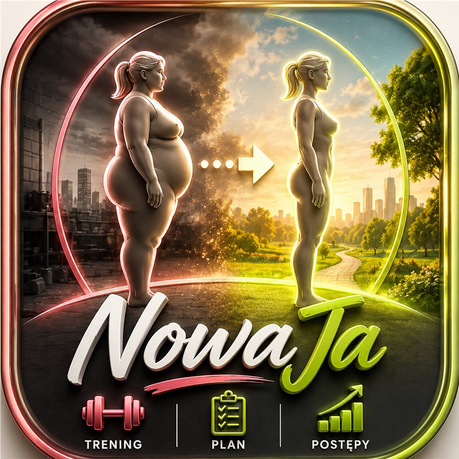

Program Engine
Cały 60-dniowy plan (4 fazy, harmonogram A→B→C→D→E→F→R) generowany z reguł, nie sztywno zakodowany dzień po dniu.
60 dni · w domu · bez sprzętu
60-dniowy program w domu. Zgłaszasz brak czasu, ból albo brak sprzętu — plan sam się dostosowuje na bieżąco. Prowadzony głosem, krok po kroku. Bez konta, bez karty.

Efekt
60 dni konsekwencji, prowadzonych krok po kroku, wystarczy, żeby poczuć realną różnicę. Program dopasowuje się do Ciebie każdego dnia — nie odwrotnie.
Rozpocznij za darmoFunkcje
Pięć elementów działających razem, nie osobnych funkcji do składania samodzielnie.
Cały 60-dniowy plan (4 fazy, harmonogram A→B→C→D→E→F→R) generowany z reguł, nie sztywno zakodowany dzień po dniu.
Prowadzony tryb treningu: odliczanie 3-2-1, automatyczne serie i odpoczynek, pełna obsługa dni obwodowych (stacje/rundy).
Głosowe zapowiadanie ćwiczeń i odliczanie (Web Speech API), w stylu łagodnym lub ostrzejszym — do wyboru.
Waga, obwody ciała i zdjęcia sylwetki z suwakiem porównania przed/po.
Prawdziwe PWA: instaluje się na ekranie głównym, działa offline, bez konta i bez chmury — Twoje dane zostają na urządzeniu.
Zanim zaczniesz
Nowa Ja ma charakter ogólny i edukacyjny — to prowadzony plan treningowy, a nie konsultacja lekarska ani plan dietetyczny. Ćwiczenia dobrano z myślą o bezpieczeństwie stawów i wariantach wspomaganych krzesłem, ale każde ciało jest inne. Zwłaszcza przy większej masie ciała, po dłuższej przerwie od aktywności fizycznej albo przy istniejących problemach zdrowotnych — najpierw skonsultuj się z lekarzem.
To nie ostrzeżenie na wszelki wypadek. Dlatego w trakcie treningu zawsze można zgłosić ból i dostać bezpieczniejszy wariant ćwiczenia — to część tego, jak ten program ma działać.
Otwórz aplikację, odpowiedz na kilka pytań o sobie — i masz gotowy dzień 1. Bez sprzętu, bez presji.
Rozpocznij za darmoZa darmo. Bez konta. Twoje dane zostają na Twoim urządzeniu.